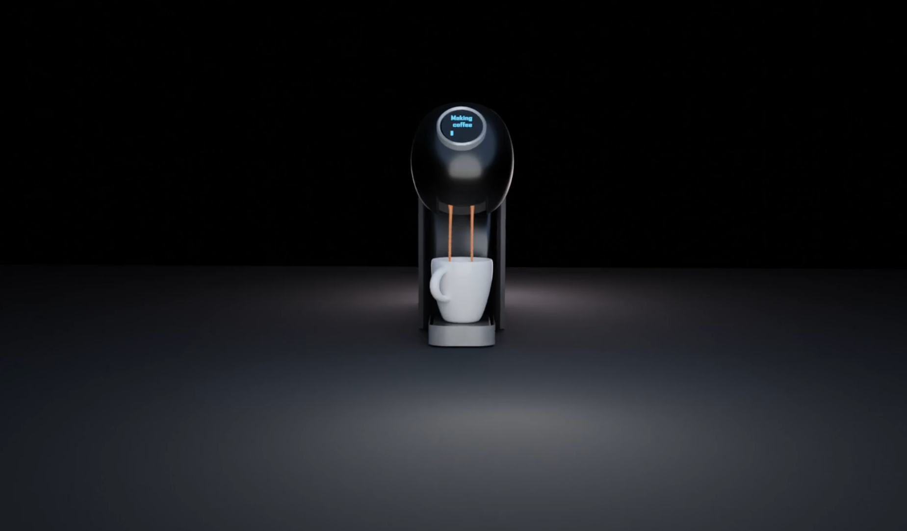

I want and need to keep my profiency regarding 3D modeling and animation up. That is why I practice different things form time to time. I used Blender as main software.
With software such as Blender these days everything is possible. That is why I had to try anything. So I made a toaster animation. Simple, but you understand what is happening
For this animation I was more profficient and thinking more about light and realism. Modeled after my own coffeemaker